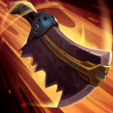
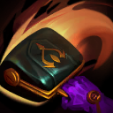

核心裝備
 雄心之鋼
雄心之鋼 日炎聖盾
日炎聖盾 荊棘之甲
荊棘之甲 自然之力
自然之力 好戰者鎧甲
好戰者鎧甲

以下為本站 7.2d 校正後的標準配置；實戰仍需依敵方陣容調整。


技能優先：Q > E > W
可抵銷下一個硬控並掉落化學藥劑；撿回藥劑可治療並縮短被動冷卻。

丟出骨鋸造成依目標當前生命計算的魔法傷害與緩速，命中可返還部分生命消耗。
讓自己通電持續傷害附近敵人，期間累積灰色生命；結束時命中敵人可回復其中一部分。

強化下一次普攻造成額外傷害並把死亡的士兵或野怪擊飛；被動提高物攻。
大量回復生命並提高跑速，後期還能獲得額外物攻與更強治療。
1技減速 → 2技通電 → 3技強化普攻 → 普攻 → 二段2技回復
先用骨鋸命中才進場，通電吸收傷害並黏住目標；結束前確保二技命中敵人回收灰色生命。
1技 → 觸發被動擋控 → 2技 → 3技 → 持續普攻
利用被動抵銷第一個硬控後撿回藥劑，繼續用骨鋸與普攻黏人；不要為撿藥劑走進危險位置。
4技 → 1技 → 2技 → 3技 → 普攻 → 二段2技
血量被壓低後再開大，利用跑速與大量回復繼續承傷；後期以卡住敵方後排輸出空間為主。
用一技依當前生命傷害與三技強化普攻穩定清野，沒有隊友控制時不必強抓。被動只能擋一次硬控，入侵前先確認敵方後續控制與藥劑落點。
高生命裝成形後可先到物件區卡住入口，持續用骨鋸消耗與減速。大絕在生命被壓低後開啟收益更高，但不要等到被點燃或重傷壓制後才反應。
負責吸收第一輪控制與傷害，逼迫敵方後排後退。若追不到核心就回身保護隊友與物件，不要因為很坦而獨自追進沒有視野的深處。
對局名單是本站依英雄機制與目前配置整理的參考，不等同固定勝率。
打野先維持標準刷野與節奏裝，只有敵方陣容或我方前排需求明顯時才調整。
觸發：敵方前排多，物件團與正面團戰會長時間卡在高生命目標上。
前排本身不需要硬轉全輸出，改用能隨目標生命造成持續傷害的防裝處理長戰。
觸發：敵方能在你進場或搶物件前快速把你秒掉。
蘭頓之兆提供高額物防並降低暴擊傷害。
觸發：進場或搶物件時經常被控制鏈直接中斷節奏。
改走水星之靴→鎖鏈軍靴，直接補韌性與魔防。
堅毅讓被控期間更耐打，適合前排承接第一波技能。
觸發：敵方前排、鬥士或吸血核心能在物件團長時間回復。
標準配置已經有重創，維持即可。
觸發：我方陣容沒有可靠第一承傷點，團戰需要有人更早進場吸收注意力。
你本來就是隊伍前排，維持標準坦裝並把資源用在正確抗性即可。
提醒：「缺前排」不代表所有打野都要改坦裝；刺客、法師與射手打野硬轉坦通常會失去英雄價值。
7.2a 打野正式版：技能名稱與核心機制依 Riot Games 台灣《激鬥峽谷》英雄頁及本站既有正式英雄資料校正；出裝、符文、技能順序、對局與前中後期節奏依目前 7.2a 打野定位整理。｜v56：完成打野第五批正式版，完整沿用李星固定打野母版，補齊起手裝、核心三件、五件成裝、15 級加點、三組連招、對局與實戰節奏。
本站於 2026-08-27 依 Patch 7.2d 重新檢查此配置。 Tier、出裝、符文與對局屬於 Wild Rift Guide 的整理與分析，不是 Riot Games 官方推薦；版本改動後會再依官方公告與實戰資料校正。